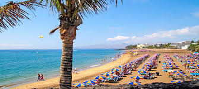

My Experience in Lanzarote
Visiting Lanzarote is an incredibly rewarding experience. With its beautiful beaches, stunning views, and exciting activities, it's easy to see why so many people flock to this paradise island every year. The capital of Lanzarote, Arrecife, is a vibrant city with plenty of interesting sights and attractions to explore, including the old town and the Castillo de San Gabriel. Head out to the beach and enjoy some of the best surfing spots in the Canary Islands. The climate is generally sunny and mild, making it the perfect destination for a beach holiday. There are plenty of activities to keep you occupied, from diving and snorkeling to windsurfing, kite surfing, and sailing. If you're looking for something more relaxed, you can also take in the stunning views of the volcanic landscape with a leisurely walk. There are plenty of local restaurants and tapas bars to refuel after a day of exploration. You can also sample some of the local wines and spirits or take a dip in the warm waters of the Atlantic Ocean. Lanzarote is a great place to relax and take in the beauty of the island, and with so much to do, you'll never be bored.
Some images from lanzerote
.png)
.png)
.png)
.png)
Here are some images I gathered on my holidays in lanzerote
Lanzerote is a perfect location for a relaxing family holiday and is a personal favourite in my family
We have returned to this beautiful island for multiple holidays in the peurto del carmen area
The island of Lanzarote is home to a wide range of activities and attractions. The island's volcanic terrain provides a great opportunity for adventure activities like hiking and mountain biking. There are also plenty of beach activities like surfing and sunbathing. The island also has many interesting cultural attractions such as the Timanfaya National Park, the Jameos del Agua Caves, and the Mirador del Rio.
Lanzarote also has a vibrant nightlife, with an array of bars and clubs. There are also numerous restaurants and cafes to choose from. The island also has some great shopping opportunities, with markets selling everything from souvenirs to local handicrafts.
The climate in Lanzarote is mild and pleasant all year round, with temperatures rarely dropping below 10°
As shown in image (bottom right) lanzarote has a unique style of architecture. This architecture has been used throughout the island for decades and suits the climate well.
There are plenty of activities on the island, my favourite being the waterpark in the north side of the island shown in image (bottom left)